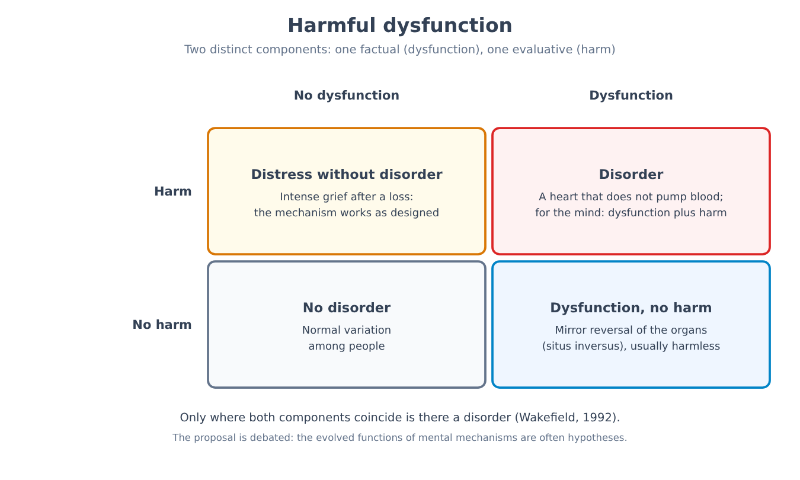
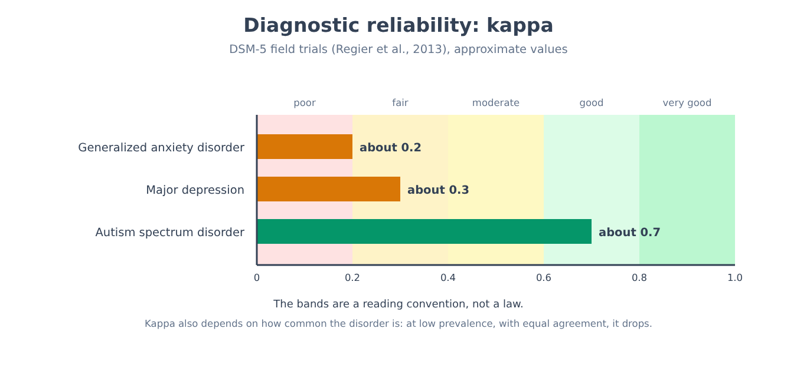
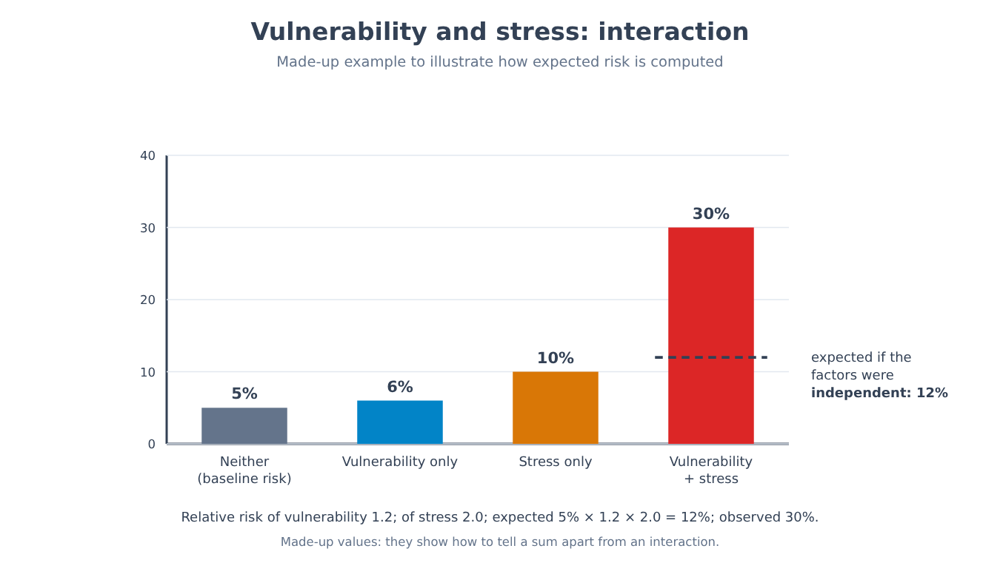
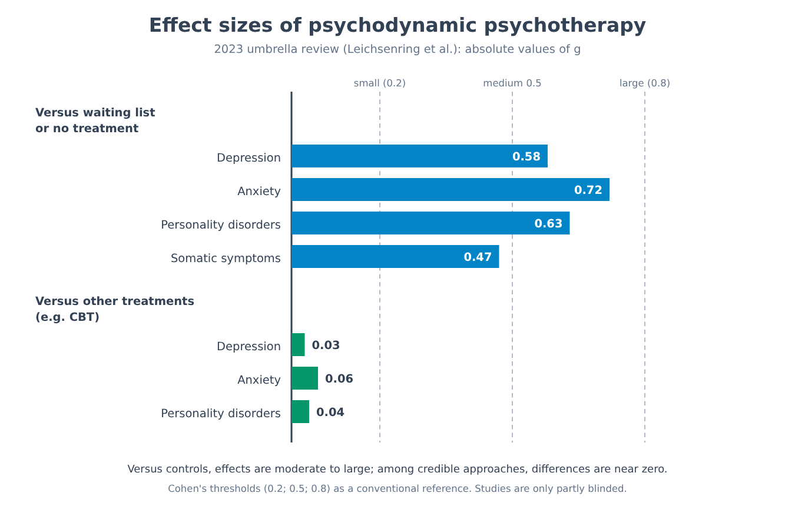
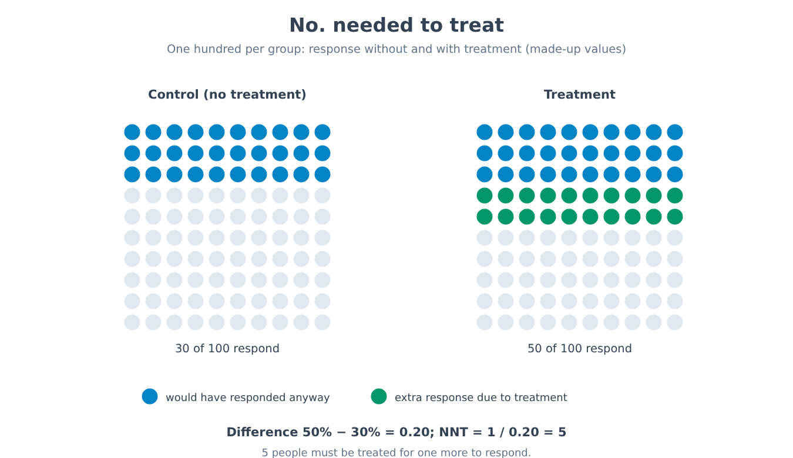
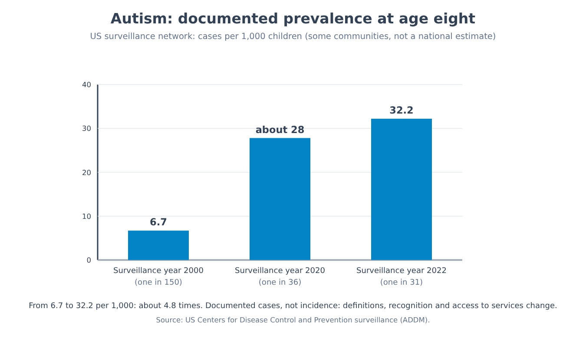

Part XII. Psychological suffering as a test bench
Chapter 73 — What makes a disorder a disorder
[IN A NUTSHELL]
A woman has been deeply sad for weeks since her husband died: does she have a disorder? This chapter shows that the answer depends on where a boundary is drawn, and that the four most common ways of drawing it (statistical, by distress, by functional impairment, by social norm) each have a recognizable flaw. It sets out the definition of the American Psychiatric Association and the proposal of “harmful dysfunction,” retraces some boundaries that have shifted, and distinguishes two questions that everyday language tends to confuse: what has changed in our knowledge and what has changed in our values.
The previous part closed with ordinary people, and with the way situation, group, and authority steer their behavior (72 → 73). The part that begins here turns to a domain in which the stakes are higher and the boundaries more disputed: psychological suffering and the way it is classified. It should be said at once what this part is not. It is not a manual of disorders, it does not describe the clinical pictures one by one, and it does not say how to choose or stop a treatment: those decisions require a professional and information about the specific case. It is instead a test bench for the method of this book. Everything learned in the earlier parts about measures, control groups, correlations, and replications is put to the test here on ground where words weigh more than elsewhere, because a diagnosis changes what a person can ask for, what others expect of her, and what she thinks of herself.
Let us start with a question that cannot be answered by an experiment. Imagine two people with the same symptoms: they sleep badly, have lost their appetite, cry often, cannot concentrate. The first lost her husband three weeks ago. The second, with no event she can point to, has been like this for three weeks. For many years the most widely used diagnostic manual excluded the first from the diagnosis of major depression: sadness was considered an understandable response to a loss, not a disorder. In 2013, with the fifth edition, the exclusion was removed, and the debate that followed among clinicians was heated. Those who wanted to remove it observed that the suffering of someone who has lost a loved one can be as severe and prolonged as that of depression, and that expecting the clinician to judge the “understandability” of grief is a difficult task. Those who wanted to keep it feared that what a healthy person feels in the face of bereavement would be turned into a disorder. Both positions have an argument, and neither is settled by data. To see why, we have to ask what we mean when we say that something is a disorder.
Four ways of drawing the boundary
The most immediate answer is statistical: a disorder is what is rare, what deviates from the majority. It has the merit of being measurable and a flaw that is immediately visible. Many rare characteristics are not disorders: having an exceptional musical memory, or being over two meters tall, or having learned to read at age three. And many frequent conditions are diseases: tooth decay is extremely widespread and no one considers it normal. The statistical criterion says how unusual a characteristic is, not whether it is a problem. As far as mental disorders are concerned, we will soon see that prevalence estimates are so high that the criterion becomes even less suitable.
The second answer is distress: a disorder is what makes one feel bad. It is the criterion closest to the experience of those who seek help, but it fails in both directions. One can suffer without having a disorder: the pain of a bereavement, of being fired, of a child's illness is intense and falls within what we expect from a human life. And one can have a disorder without suffering: in the early phases of a manic episode a person may feel fine, full of energy and ideas, and make choices that will cost her dearly (spending, broken relationships, her job).
The third is functional impairment, or disability: a disorder is what prevents one from working, studying, maintaining relationships. The criterion is more objective than distress, but it depends on context. The same characteristic can be an impediment in one environment and go unnoticed in another: a reading difficulty weighs little where people read little and a great deal where compulsory schooling makes it visible to everyone. It follows that functional impairment also measures the environment, not just the person.
The fourth is the social norm: a disorder is what deviates from how a person is expected to behave. This criterion has an embarrassing history, because it has allowed dissent to be called illness. In 1851 an American physician proposed the name “drapetomania” for the tendency of slaves to run away, treating it as a disorder; the proposal never entered a modern diagnostic manual, but it shows how far a definition based on the judgment of the dominant society can go. On a different scale, in the Soviet Union the diagnosis of “sluggish schizophrenia” was used to hospitalize some political dissidents. This is why every contemporary definition takes care to specify that deviation from norms alone is not enough.
[COMMON BELIEF]
“There is a sharp line between those who are normal and those who are ill.” The image is convenient, but none of the four criteria produces it: each draws a threshold along a continuous scale (of rarity, of distress, of impairment, of deviation from expectations), and the position of the threshold depends on a choice. The rest of the chapter, and the next one, serve to see how the choice is made and with what consequences.
The American psychiatric Association's definition
The most frequently cited definition today is that of the DSM (Diagnostic and Statistical Manual of Mental Disorders), the manual of the American Psychiatric Association, which reached its fifth edition in 2013 (with a text revision in 2022). Alongside it is the ICD (International Classification of Diseases), the classification of the World Health Organization, whose eleventh edition came into use in 2022. For DSM-5, a mental disorder is a syndrome characterized by a clinically significant disturbance in cognition, emotion regulation, or behavior that reflects a dysfunction in the psychological, biological, or developmental processes underlying mental functioning. It is usually associated with distress or impairment in functioning. The definition adds two exclusions. An expectable or culturally approved response to a common event, such as the death of a loved one, is not a disorder. And socially deviant behavior (political, religious, sexual), or a conflict that is primarily between the individual and society, is not a disorder unless it results from a dysfunction.
The definition combines several criteria, namely distress, functional impairment, and dysfunction, and uses the two exclusions to shield them from the flaws of the statistical and social criteria. A fundamental difficulty remains, however: it says there is a dysfunction of mental processes, but for most disorders we do not know which processes are failing, nor what their normal functioning is. The manual itself essentially admits that no definition specifies precise boundaries.
One attempt to make the notion of dysfunction more rigorous is that of Jerome Wakefield (1992), who proposed defining a disorder as a harmful dysfunction. The proposal has two components. The first is factual: a mental mechanism fails to perform the function for which it was shaped in the course of evolution. The second is evaluative: the failure of that mechanism causes harm, judged as such according to social values. The advantage is that the two components come apart and can be discussed one at a time, as an example from the body shows. A heart that does not pump blood is a case in which dysfunction and harm occur together, and it is a disease. A mirror-image reversal of the internal organs (situs inversus), which usually causes no problem, is a case of dysfunction without harm: the anatomy is unusual, but no one suffers from it. On the opposite side, intense suffering after a loss is harm without dysfunction: the emotional mechanism is doing what it is made for, and for this reason, according to Wakefield, it is not a disorder.

[CONTROVERSIAL QUESTION]
The proposal has found many critics, and the objections are of three kinds. The first is that the evolutionary functions of mental mechanisms are not known with the precision that would be needed: saying that a mechanism “does not work as it should” presupposes knowing what it was selected to do, and for many psychological functions the reconstructions are hypotheses, not facts. The second is that the judgment of dysfunction may contain values without declaring them: if “dysfunction” is taken to mean what does not help one adapt to a certain environment, a judgment about that environment is already being made. The third is practical: a clinician must decide whether to offer help even in cases where the distinction between harm and dysfunction cannot be established, and a definition that does not allow a decision has limited value for practice. Defenders of the proposal reply that the criterion serves to reason about boundaries, not to resolve every case, and that the separation between fact and value is useful precisely because it forces one to say which of the two components is in dispute.
The boundaries have shifted
The boundaries of the manuals have not stood still. One can look at some of the shifts and ask, for each one, what changed.
| Case | What changed | What carried weight |
|---|---|---|
| Homosexuality (1973–1990) | The board of trustees of the American Psychiatric Association removed it from DSM-II in 1973; a diagnosis tied to distress about one's own orientation remained in DSM-III and was eliminated as such in DSM-III-R (1987); the WHO removed it from the ICD in 1990 | Internal and external criticism, engagement with the data, changing social norms |
| Bereavement (2013, 2022) | DSM-5 removed the bereavement exclusion from major depression; DSM-5-TR introduced prolonged grief disorder (after at least twelve months in adults, six in ICD-11) | Data on course, debate about the risk of medicalization, need for services |
| Gambling (2013) | DSM-5 moved it from the impulse-control disorders to the addictive disorders; ICD-11 also includes a gaming disorder involving video games | Similarities with addictions, debate about the threshold between heavy use and disorder |
| Drapetomania (1851) and sluggish schizophrenia (USSR) | Labels used to pathologize escape or dissent; the first never accepted in a modern classification | Social norm used as a criterion, political use of diagnoses |
The table shows that boundaries shift for at least three distinct reasons. Sometimes knowledge changes (data on course, on similarities between conditions). Sometimes a society's values and norms change (what is tolerated, what is considered harm). And sometimes practical needs matter, such as access to services, insurance coverage, or the requirements of research or law. The three reasons usually appear mixed together, and separating them case by case requires historical reconstruction. The removal of homosexuality from the DSM, in particular, is an example in which engagement with the data and social protest counted together, and it reminds us that classificatory science does not take place somewhere separate from society.
[MIND THE LEAP]
From the fact that diagnostic boundaries have shifted over time it does not follow that they are arbitrary, nor that disorders are “just” social constructions. In medicine boundaries shift all the time without diseases becoming inventions: in 2017 the American cardiology guidelines lowered the blood pressure threshold defining stage 1 hypertension to 130/80 mmHg, and the reason was that new data showed an already elevated risk at lower values. A threshold can move because more is known about the risk and about the benefit of intervening. For mental disorders the difference lies in the fact that there is often no measurable indicator independent of the syndrome (such as blood pressure, or blood glucose), and so the threshold rests mainly on clinical and social judgments. It is a real difficulty, but it does not mean that there is nothing behind the suffering to explain.
How wide the boundary is
To understand how much these choices matter, it is enough to look at how many people fall within the definitions. Prevalence is the proportion of a population that has a condition in a given period: “past-year” prevalence counts those who have it during those twelve months, “lifetime” prevalence counts those who have had it at least once. Lifetime prevalence estimates obtained with structured interviews are high: in the United States about 46% of the population meets, at some point, the criteria for at least one disorder, and in many countries the estimates exceed one person in three. In the Dunedin study from chapter 60, followed up to age 38, the published estimate (Schaefer and colleagues, 2017) indicates that the great majority of participants, over 80%, had received at least one diagnosis at some point.
How should these numbers be read? There are at least three readings, and they are not mutually exclusive. The first is that psychological suffering is very widespread and was underestimated for years. The second is that the thresholds are so low that they include part of the normal variation of human experience: a two-week episode at nineteen, come and gone, counts in the “lifetime” estimate just as much as a disorder that has lasted for decades. The third is that the very meaning of concepts related to harm has broadened over time, a phenomenon that Nick Haslam (2016) called concept creep. It should also be noted that the share of severe and persistent cases is much smaller than the overall share: the high percentages mostly count mild or transient episodes. Which reading prevails is an open question, and it is a good reason to be wary of anyone who cites these percentages to support only one of the three.
The boundary, then, can be neither ignored nor taken as a given of nature. Knowing where it lies requires knowing how the list that draws it was built, and asking whether the categories on that list correspond to real units or to useful conventions (73 → 74). A case in which the debate about the boundary has involved an entire category, with the voices of the people concerned, is that of autism (73 → 77).
[NUMBERS]
• United States: about 46% of the population meets the criteria for at least one disorder over the lifetime; in many countries the estimate exceeds one person in three.
• Dunedin (988 people assessed at age 38): according to the published estimate, about 83% received at least one diagnosis over the life course.
• Threshold for stage 1 hypertension: from 140/90 to 130/80 mmHg in the 2017 American guidelines (an example from medicine of a boundary moved because of new data).
• Bereavement: exclusion removed in DSM-5 (2013); prolonged grief disorder introduced in DSM-5-TR (2022), after at least twelve months in adults.
[MINI-TIMELINE]
• 1851: proposal of “drapetomania,” which never entered a modern classification.
• 1973: homosexuality is removed from DSM-II.
• 1980: DSM-III introduces explicit diagnostic criteria (chapter 74).
• 1987: the last diagnosis tied to sexual orientation is eliminated (DSM-III-R).
• 1990: the WHO adopts ICD-10, without homosexuality.
• 1992: Wakefield proposes “harmful dysfunction.”
• 2013: DSM-5, without the bereavement exclusion.
• 2022: DSM-5-TR and ICD-11.
[KEY POINT OF THE CHAPTER]
• The four most common ways of drawing the boundary (rare, painful, disabling, socially deviant) each fail in a recognizable way: one can suffer without having a disorder and have one without suffering; what is frequent can be a problem and what is rare may not be.
• The DSM-5 definition combines distress, impairment, and dysfunction of mental processes, and excludes expectable responses to common events and mere social dissent; its weakness is that for many disorders we do not know which process is dysfunctional.
• The harmful dysfunction proposal (Wakefield, 1992) separates a factual component (a mechanism that does not do what it was shaped for) from an evaluative one (harm); it is useful for reasoning and contested in its evolutionary premises.
• The boundaries have shifted because of changes in knowledge, values, and practical needs, mixed together; a shift does not make a category arbitrary, as hypertension shows.
• Lifetime prevalence estimates are very high (about 46% in the United States), and can be read as underestimated suffering, low thresholds, or broadening concepts; there is as yet no way to choose among these readings.
Chapter 74 — How a classification is built
[IN A NUTSHELL]
A diagnosis is a label that a classification assigns to a person; it is worth as much as the classification is worth. This chapter explains how its two fundamental qualities are measured: reliability (do two clinicians arrive at the same label?) and validity (does the label correspond to something real?). It shows with two calculations what a low kappa and “two hundred twenty-seven ways” of meeting the same category mean, presents comorbidity and the p factor, and compares the three ways in which changing the list is proposed today (dimensions, domains of function, symptom networks).
The previous chapter showed that the boundary between what is and what is not a disorder can be drawn in several ways (73 → 74). This chapter deals with the next step, less visible and just as important: once it is established that disorders exist, how is the list that names them built? A list of this kind serves many purposes. It allows clinicians to understand one another, researchers to study comparable groups, services to decide who has access to what, and, at least in intention, it helps to predict the course of a condition and to choose an intervention. Not all these functions require that the categories correspond to units present in nature. As Robert Kendell and Assen Jablensky (2003) emphasized, a list can be useful even if its categories are not valid in a strong sense, just as a road map is useful without reproducing every detail of the terrain. The distinction between utility and validity is the thread running through the whole chapter.
For the two qualities we will use concepts already met in chapter 3. Reliability (the consistency of a measure) applies to diagnosis in the form of inter-rater reliability: if two clinicians examine the same person independently, how often do they arrive at the same label? Validity (how well a measure captures what it claims to capture) applies in the question: does the category identify a group of people who have something real in common, beyond the fact of having been named in the same way?
When two clinicians disagree
For decades the answer to the first question was an uncomfortable one. One example is the comparison between hospitals in New York and London carried out in the early 1970s (Cooper and colleagues, 1972): inpatients with a similar clinical picture received a diagnosis of schizophrenia much more often in New York than in London, whereas in London they were more often classified as having mood disorders. When a research team applied the same standardized interview and the same criteria to both hospitals, the difference shrank considerably. The result suggested that what differed was not the patients but local diagnostic habits. Psychiatrists from a group at Washington University in Saint Louis (Feighner and colleagues, 1972) then proposed explicit criteria for a limited number of disorders, and this path led to the third edition of the DSM (1980), which abandoned general descriptions in favor of lists of criteria and thresholds. Since then the diagnostic list has had the form we know, and precisely for this reason it is possible to count how often two clinicians agree.
An episode often cited in this story is the Rosenhan study, which illustrates well both the question and the caution with which it must be treated.
[THE EXPERIMENTAL DESIGN]
In David Rosenhan's study (1973), published under the title “On Being Sane in Insane Places,” eight people with no history of psychiatric disorders presented themselves at twelve hospitals in five American states saying they heard voices of the same sex that seemed to say words such as “empty,” “hollow,” “thud.” After admission they stopped reporting symptoms and behaved normally. All were admitted: seven with a diagnosis of schizophrenia, one with a diagnosis of manic-depressive psychosis. They remained in hospital from 7 to 52 days (19 on average), and were discharged with a diagnosis of schizophrenia “in remission.” None was recognized as an impostor by the staff, whereas some of the inpatients suspected that they were sane (35 out of 118 in the first three admissions). In a second part, a hospital was warned that over the following three months fake patients would arrive: the staff judged 41 of the 193 new admissions to be probable impostors and another 42 suspect, but Rosenhan had sent no one. The author's conclusion: in a psychiatric hospital, diagnoses do not reliably distinguish the sane from the insane.
[DOES IT STILL HOLD?]
As a demonstration, the study does not hold up. Robert Spitzer (1975) objected that diagnoses depend largely on what the patient reports, and that the deception says no more about psychiatry than it would about a physician if a patient verbally faked a symptom whose absence no test could establish; and that the staff had good reasons not to suspect deception. More serious is the reconstruction by the journalist Susannah Cahalan (2019), who examined the papers preserved after the author's death: she found inconsistencies between the data and the published text, quotations that did not match the medical records, managed to identify only two of the eight pseudopatients, and wondered whether the other six existed. Other scholars have judged the picture to be consistent with fraud (Scull, 2023). What remains is the question the study had raised, not the answer: how far can a diagnosis given in a hospital, by a clinician with little information and little time, be considered a datum? Answering requires measures of agreement, which is exactly what follows.
How agreement is measured
If two clinicians examine a hundred people and give the same answer (disorder present or absent) in seventy-five cases, they have 75% agreement. But some of that agreement would occur even by tossing a coin, and how much depends on how often “yes” is said. Cohen's kappa corrects the observed agreement for the agreement expected by chance.
[FORMULA]
κ = (p₀ − pₑ) / (1 − pₑ)
Where:
• κ (kappa) is the agreement index, which equals 1 with perfect agreement, 0 with agreement equal to that expected by chance, and negative values with agreement below chance;
• p₀ is the observed proportion of cases in which the two raters give the same answer;
• pₑ is the proportion of agreement expected by chance: the sum of the products of the frequencies with which each rater gave that answer (the probability that both say “yes” by chance, plus the probability that both say “no”);
• 1 − pₑ is the maximum possible agreement beyond chance.
Worked example. Out of 100 people, the two clinicians both say “yes” in 40 cases, both “no” in 35, and disagree in the remaining 25 (the first says yes and the second no in 10, the reverse in 15). The observed agreement is p₀ = (40 + 35) / 100 = 0.75. The first clinician says “yes” 50% of the time (40 + 10), the second 55% (40 + 15), so pₑ = 0.50 × 0.55 + 0.50 × 0.45 = 0.275 + 0.225 = 0.50. Then κ = (0.75 − 0.50) / (1 − 0.50) = 0.50. An observed agreement of 75% corresponds to a kappa of 0.50, that is, halfway between chance and perfect agreement.
To read the values a convention is used, not a law: above 0.8 agreement is considered very good, between 0.6 and 0.8 good, between 0.4 and 0.6 moderate, between 0.2 and 0.4 fair, below 0.2 poor. In the DSM-5 field trials, which preceded the publication of the manual in 2013 (Regier and colleagues, 2013), different clinicians assessed the same patients at different times in American and Canadian centers, and kappa turned out to be good for autism spectrum disorder (about 0.7), but much lower for major depression (about 0.3) and for generalized anxiety disorder (about 0.2). The finding was much debated. Those who read it as a failure of the classification observed that precisely the diagnoses most frequent in practice were among the least reliable. Those who defended it pointed out that the design involved two assessments at different times, and therefore also included genuine changes in symptoms between one visit and the next, and that in studies with structured interviews and trained clinicians the values are usually higher.

[MIND THE LEAP]
A low kappa does not mean that clinicians are often wrong: it also depends on how frequent the disorder is. If the condition affects 5% of people and the two clinicians agree in 95% of cases, the agreement expected by chance is already very high (pₑ = 0.05 × 0.05 + 0.95 × 0.95 = 0.905), and κ = (0.95 − 0.905) / (1 − 0.905) ≈ 0.47. The same 95% agreement would give κ = 0.90 if the condition affected half of the people (pₑ = 0.50). Kappa is a good indicator for comparing conditions of similar frequency, and it should be read alongside the percentage of agreement and the frequency. Moreover, high reliability does not prove validity: two clinicians can always agree on a category that corresponds to nothing real.
What it would mean for a category to be valid
[COMMON BELIEF]
“A psychiatric disorder is established like a fracture: there is a test that confirms it.” For the great majority of mental disorders there is no laboratory or imaging test that establishes the diagnosis: it is based on the interview, on observation, and on the application of criteria. This is not an isolated case in medicine (migraine and many forms of chronic pain are diagnosed in the same way), but it has a consequence: validity cannot be verified against an external benchmark and must be built with other arguments.
The second quality is harder to measure. In 1970 Eli Robins and Samuel Guze proposed five criteria for demonstrating the validity of a psychiatric diagnosis: a precise clinical description, laboratory studies that distinguish it, delimitation from other disorders, follow-up studies of course over time, and family studies. The idea is that a valid category should behave like a well-defined disease: it should have a recognizable picture, a predictable course, a familial distribution, and, if possible, a biological correlate. For very few psychiatric disorders are all these elements available, and almost no diagnosis has a laboratory test that identifies it.
Kendell and Jablensky (2003) propose a stricter criterion for validity in the strong sense: a category is valid if there is a “point of rarity” between it and neighboring categories, that is, if between the typical cases of one disorder and those of another, or between cases and non-cases, there is a gap in the distribution of people. If instead people are distributed continuously, along a scale of severity, without gaps, there are no natural boundaries, and thresholds are conventions. Taxometric analysis is a set of statistical methods that asks precisely this: do the scores fall into two separate groups, or along a continuum? A review of many of these studies (Haslam and colleagues, 2012) concluded that for most of the psychopathological constructs examined the structure turned out to be dimensional, not taxonic. A practical consequence follows: if the structure is continuous, the question “how depressed?” makes more sense than “depressed, yes or no?”, and a threshold is a way of deciding where to intervene, not the boundary of a species.
One category, two hundred twenty-seven ways to meet it
A second problem concerns homogeneity. For a diagnosis of major depressive episode, DSM-5 requires five criteria out of nine, including at least one of two (depressed mood, or loss of interest or pleasure); the nine include changes in sleep, appetite, concentration, fatigue, guilt, motor activity, and thoughts of death. How many different combinations satisfy the rule? One counts the choices of at least five criteria out of nine, and subtracts those that include neither of the two main criteria.
[FORMULA]
N = Σ(k = 5…9) C(9, k) − Σ(k = 5…7) C(7, k)
Where:
• N is the number of combinations of criteria that satisfy the rule;
• C(n, k) (binomial coefficient) is the number of ways of choosing k elements out of n without regard to order, equal to the product n × (n − 1) × … × (n − k + 1) divided by the product k × (k − 1) × … × 1 (for example C(9, 5) = (9 × 8 × 7 × 6 × 5) / (5 × 4 × 3 × 2 × 1) = 126);
• the first sum counts the ways of choosing from five to nine criteria out of the nine available;
• the second sum counts the ways of choosing from five to seven criteria out of only the seven that are not the two main ones: these are the combinations to be excluded, because they contain neither depressed mood nor loss of interest.
Worked example. First sum: C(9,5) + C(9,6) + C(9,7) + C(9,8) + C(9,9) = 126 + 84 + 36 + 9 + 1 = 256. Second sum: C(7,5) + C(7,6) + C(7,7) = 21 + 7 + 1 = 29. So N = 256 − 29 = 227. Considering that some criteria are double (insomnia or hypersomnia, agitation or retardation), the distinct combinations are even more numerous.
The consequence is that, going by the list of nine criteria, two people with the same diagnosis may have only one criterion in common. This is not an abstraction. Eiko Fried and Randolph Nesse (2015) examined the symptoms of 3,703 patients with major depression enrolled in a large treatment study (the STAR*D study from chapter 22), and counted 1,030 different symptom profiles. The result does not show that depression does not exist, but it indicates that the label groups together very different pictures, and this may help explain why treatments and biological causes often show a modest average effect, with wide differences between individuals (chapter 22).
Comorbidity: one person, several labels
A third problem is comorbidity: the presence, in the same person, of more than one diagnosis. In population surveys and in clinical settings, a substantial share of people with one diagnosis also have others. If the categories corresponded to distinct diseases, such high comorbidity would be surprising. At least four explanations have been proposed, and they are only partly mutually exclusive. The criteria overlap: difficulty concentrating or sleep disturbances appear in many lists, and two diagnoses may share elements. There may be common risk factors, genetic or environmental (74 → 75). The classification may divide a continuum too finely. Finally, one disorder may cause another.
One way of reading comorbidity is to look for the structure beneath the labels. In the Dunedin study (chapter 60), Avshalom Caspi and colleagues (2014) statistically analyzed the diagnoses of participants followed from age 18 to 38. The model that best described the data comprised three dimensions (internalizing: depression and anxiety; externalizing: antisocial behavior and substance use; thought disorder: psychotic symptoms) and, above them, a general factor that the authors called the p factor. Higher scores on the p factor were associated with greater life impairment, more disorders in the family, a more difficult developmental history, and poorer early brain function. The analogy with the g factor of intelligence (chapter 64) is deliberate: like the positive manifold of cognitive tests, diagnoses correlate positively with one another. And the same caution applies as before: a statistical factor summarizes a correlation, it does not demonstrate a single cause. The p factor might reflect a common vulnerability, but also elements shared among the measures or the overlap of criteria, and research is ongoing.
Three proposals for changing the list
In the face of these problems, alternatives have been proposed. They are not mutually exclusive, and each responds to a different difficulty.
The first is dimensional. The Hierarchical Taxonomy of Psychopathology (HiTOP; Kotov and colleagues, 2017) organizes symptoms into continuous dimensions, grouped into subfactors and then into broader spectra (such as internalizing and externalizing), based on how symptoms vary together in populations. It does not produce yes/no diagnoses, but profiles; it is more faithful to the statistical structure of the data, and less simple to use in services, where it is often necessary to decide whether or not a person qualifies for a pathway of care.
The second starts from function, not symptoms. The American Research Domain Criteria program (RDoC; launched by the National Institute of Mental Health starting in 2009-2010) proposes that research study domains of functioning (for example the fear system, reward, cognitive processes, social processes) at multiple levels, from genes to behavior, independently of diagnostic categories. The bet is that mechanisms, once understood, will redraw the categories. The criticisms are that the framework has so far produced more a grid for organizing studies than new treatments, and that it neglects part of clinical experience.
The third is the network approach (Borsboom and Cramer, 2013): a disorder is not the manifestation of a common cause, like an infection that produces symptoms, but a set of symptoms that reinforce one another (insomnia produces fatigue, fatigue makes it hard to concentrate, failing to concentrate produces worry, and so on), so that the disorder coincides with a network that sustains itself. It has the merit of shifting attention to symptoms and their relationships. It should be remembered that networks estimated from data collected only once show associations, not causal links: to argue that one symptom causes another requires longitudinal studies or interventions, according to the criteria of chapter 4.
[CONTROVERSIAL QUESTION]
The debate between categories and dimensions is not merely academic. Defenders of categories observe that in clinical practice and in services decisions must be made anyway (treat or not treat, hospitalize or follow up at home), and that labels are a common language and often have practical value even when they are not valid in the strong sense. Those who prefer dimensions observe that categories give the impression of boundaries that do not exist, and cause information to be lost about those just below the threshold. The most widespread position today is that thresholds serve to decide and not to discover, and that the two perspectives can coexist (for example with spectra in research and categories in the clinic). But one point remains open: whether the biological mechanisms of disorders correspond to categories, to dimensions, or to something else, we do not yet know.
Constructs, labels, and the risk of mistaking them for things
All this recalls what was said in chapter 3 about constructs: “depression” is a construct, that is, a concept introduced to organize observations, not something found inside the head like an object. Reification is the error of treating a construct as a thing: saying that a person “has depression” as if she had a virus, and looking for the corresponding lesion. This does not mean that constructs are useless (temperature and intelligence are constructs), but that the question of whether they correspond to distinct entities must be asked, and is not settled by giving them a name.
There is a second difference, which distinguishes categories of people from categories of things. The philosopher Ian Hacking (1995) called the looping effect the fact that classifying people changes the people classified: those who receive a label may recognize themselves in it, change what they expect of themselves, seek out other people with the same label, or reject it, and the way people behave in turn reshapes the category. A mineral does not react to being classified; a person does. It follows that a diagnostic category is a moving target, and that it is not always possible to separate the trajectory of the category from the history of the people who have been placed in it (74 → 77).
[NUMBERS]
• Rosenhan (1973): 8 pseudopatients, 12 hospitals, 7–52 days of hospitalization (mean 19); second part: 193 patients assessed, 41 judged impostors, 42 suspect, no fake patient sent. Data called into question by Cahalan (2019).
• DSM-5 field trials (2013): kappa about 0.7 for the autism spectrum, about 0.3 for major depression, about 0.2 for generalized anxiety disorder.
• Kappa in the example: agreement 75%, κ = 0.50; with 5% prevalence and 95% agreement, κ ≈ 0.47.
• Major depression: 227 combinations of criteria satisfy the rule “five out of nine, including one of the two main ones”; in 3,703 patients, 1,030 different symptom profiles (Fried and Nesse, 2015).
[MINI-TIMELINE]
• 1970: Robins and Guze propose five validation criteria.
• 1972: New York–London comparison (Cooper and colleagues); Feighner criteria.
• 1973: Rosenhan study.
• 1980: DSM-III and explicit diagnostic criteria.
• 1995: Hacking describes the looping effect.
• 2003: Kendell and Jablensky distinguish validity and utility.
• 2013: DSM-5 and field trials; Borsboom and Cramer propose the network approach.
• 2014: Caspi and colleagues, p factor.
• 2017: HiTOP.
[KEY POINT OF THE CHAPTER]
• A classification can be useful without being valid in the strong sense; the two qualities are measured in different ways and must be kept separate (Kendell and Jablensky, 2003).
• Inter-rater reliability is measured with kappa, which corrects agreement for chance: with 75% agreement and frequencies of 50% and 55%, κ = 0.50; in the DSM-5 field trials kappa was about 0.7 for autism, about 0.3 for major depression, and about 0.2 for generalized anxiety.
• Kappa also depends on the frequency of the disorder: for the same agreement (95%) it can be 0.47 with 5% prevalence and 0.90 with 50% prevalence.
• Major depression can be diagnosed through 227 combinations of criteria, and more than a thousand different profiles appear in real data: the same label groups very heterogeneous pictures.
• High comorbidity and the p factor (Caspi and colleagues, 2014) suggest an underlying structure more continuous and general than the categories; the p factor is a statistical summary, not a demonstrated cause.
• HiTOP (dimensions), RDoC (domains of function), and symptom networks are three reform proposals that respond to different problems; none has replaced the list.
• Classifying people differs from classifying things: the label changes those who receive it, and categories change over time (looping effect).
Chapter 75 — Explanatory models
[IN A NUTSHELL]
Why does one person develop a disorder while another, raised in the same conditions, does not? The answers lie at different levels (genes, experiences, thoughts, brain, context), and none, for now, has a claim to priority. This chapter sets out the diathesis-stress model with the instructive case of the serotonin transporter gene, cognitive models, and biological models with what genome-wide genetic studies have found, and shows why “at what level should the explanation be sought” is still an open question.
Two brothers grow up in the same house, with the same parents, in the same neighborhood. At twenty-five one goes through a severe depressive episode and the other does not. When one asks “why?”, the possible answers fall on different levels: genes, which brothers share only in part; experiences, which are never identical even within the same family; the way of thinking about what happens; the functioning of the brain; the social context of that moment. Each answer has behind it a research tradition and a way of studying the problem, and each, taken alone, explains only a part. The previous chapter showed how uncertain the categories one is trying to explain are (74 → 75); this chapter shows how uncertain, in turn, the next step is.
What it means to explain a disorder
It is worth clarifying three words that are used interchangeably in everyday language. A risk factor is a characteristic associated with a higher probability of a disorder: it says that the two things go together, not that one causes the other, and everything chapter 4 said about correlations and confounding variables applies to it. A cause is something that, if changed, changes the probability of the disorder: demonstrating it requires designs that allow intervention, or at least the exclusion of alternative explanations. A mechanism is the chain of processes linking cause to effect. Many “explanations” of disorders stop at the first rung (there is an association) and are presented as if they had reached the third.
Two concepts help to organize what is found. Equifinality indicates that the same outcome can be reached by different routes: two people with depression may have arrived there by paths that have little in common. Multifinality indicates the opposite: the same starting point can lead to different outcomes. A childhood of maltreatment, for example, is associated with several different disorders (depression, substance abuse, antisocial behavior), and many maltreated children develop none of the three (Cicchetti and Rogosch, 1996). If equifinality and multifinality are the rule, looking for “the cause” of a disorder makes little sense, and the appropriate question concerns probabilities and pathways.
Diathesis and stress
The most widespread model for combining factors of different kinds is the diathesis–stress model. It was formulated for schizophrenia by Joseph Zubin and Bonnie Spring (1977): each person has a degree of vulnerability (the diathesis, that is, the predisposition, of genetic, early, or acquired origin), and stressful events push toward the threshold beyond which the disorder appears. With little vulnerability, a lot of stress is needed; with much vulnerability, a little is enough. The model has the merit of saying something more precise than “both nature and environment matter”: the effects may not simply add up, but interact. This can be checked with a calculation.
[FORMULA]
Relative risk: RR = R_exposed / R_unexposed
Expected risk with two independent factors: R_expected = R₀ × RR_A × RR_B
Where:
• R_exposed and R_unexposed are the proportions of people who develop the disorder among those who have the factor and those who do not;
• RR (relative risk) says by how many times the factor multiplies the risk (it equals 1 if it does not change it);
• R₀ is the risk of those who have neither factor;
• RR_A and RR_B are the relative risks of the two factors assessed on their own;
• R_expected is the risk that would be observed for those who have both if the two factors acted independently, each multiplying on its own.
Worked example (values invented for illustration). The risk for those with neither vulnerability nor stress is R₀ = 5%. With vulnerability alone it is 6% (RR_A = 6 / 5 = 1.2), with stress alone 10% (RR_B = 10 / 5 = 2.0). If they acted independently, those with both would have R_expected = 5% × 1.2 × 2.0 = 12%. If 30% is observed in the data, the combination weighs much more than the sum of its parts: there is an interaction. The same holds with an additive calculation (5% + 1 point + 5 points = 11%, against the 30% observed). The empirical question is always whether real data show a discrepancy of this kind and whether it is replicable.

The most studied case of an interaction of this kind is also the most instructive, because it shows what happens when an attractive idea meets replication.
[THE EXPERIMENTAL DESIGN]
In the study by Avshalom Caspi and colleagues (2003), data from the Dunedin cohort (chapter 60) were used: for 847 participants a variant of the gene regulating the serotonin transporter was determined (the region called 5-HTTLPR, which exists in a “short” and a “long” form), stressful life events in the period from age 21 to 26 were counted, and depression was assessed at age 26. The result, published in Science, was that the effect of stressful events on depression was stronger in people with the short form of the gene, and almost absent in those with two copies of the long form. The study became the symbol of a new era, that of gene–environment interactions, and was cited for years as direct evidence for the diathesis–stress model.
[DOES IT STILL HOLD?]
The interaction did not survive scrutiny. Two meta-analyses from 2009 (including that of Risch and colleagues) found no overall effect of genotype on the effect of stress, and a larger collaborative analysis (Culverhouse and colleagues, 2018) found no evidence of a strong interaction. A later study that tested eighteen of the most studied candidate genes for depression, in samples of tens to hundreds of thousands of people (Border and colleagues, 2019), found no support for these hypotheses. The general model (vulnerability and stress interact) remains plausible and supported by other kinds of studies, but this specific example, a single gene with a strong interaction effect, is not confirmed. The ingredients of the failure are those of chapter 5: small samples for effects that, if they exist, are small; analyses with many degrees of freedom; the tendency to publish positive results. For the interaction between the MAOA gene and maltreatment from chapter 27 the picture is more uncertain than negative: subsequent meta-analyses have given heterogeneous results, and the original finding is neither clearly confirmed nor refuted.
Cognitive models
A second level of explanation lies in the way people interpret what happens. Aaron Beck (1967, 1976) proposed a model of depression in which the condition is maintained by schemas, that is, stable and negative beliefs, which produce automatic thoughts in response to events. Its core is the negative cognitive triad: a negative view of the self, the world, and the future. Faced with an exam that went badly, a person with these schemas thinks “I'm worthless, it will always be like this,” and not “I prepared the wrong way.” The idea connects to what chapter 53 said about learned helplessness: in the reformulation by Abramson, Seligman, and Teasdale (1978), what matters is how the person explains negative events (with stable, global, and internal causes), not only whether or not she has control. For anxiety disorders, David Clark's model of panic (1986) holds that bodily sensations (a racing heartbeat) are interpreted catastrophically (a heart attack), and that this interpretation intensifies them.
What do the data say? People with depression show on average more negative thoughts and attention and memory biased toward negative material; but this is not enough to show that the thoughts cause depression, because they may be one of its symptoms. The causal question can be addressed with studies that follow over time people who are not yet depressed (some show that negative attitudes predict later episodes, with usually moderate effects) and with studies of the efficacy of therapies that act on thoughts (chapter 76). If negative thoughts returned to normal after recovery, they would be consequences of depression and not causes; if they persisted, they might be a vulnerability. The results are mixed.
An example of how an attractive cognitive idea can be scaled back is depressive realism. In 1979 Lauren Alloy and Lyn Abramson observed that, in a task in which participants had to judge how much control they had over turning on a light, depressed people estimated their own control more accurately than non-depressed people, who tended to overestimate it. It was summed up in the phrase “sadder but wiser.” A meta-analysis of later studies (Moore and Fresco, 2012) found a very small effect, dependent on the type of task: the image of depression as a clear-sighted view of reality is not supported.
Biological models
The third level is biological, and we already know a fragment of it: the monoamine hypothesis, which chapter 22 showed is not supported in its simple form, although some drugs acting on those systems remain effective. Here the focus is mainly on genetics and brain differences, for what they show and for what they do not allow us to conclude.
Twin and family studies (chapter 27) indicate that psychiatric disorders have a substantial and highly variable hereditary component: on the order of 40% for major depression, and much higher for schizophrenia, with estimates around 80%. The cautions of chapter 27 apply: heritability is a property of a population in an environment, not an individual destiny, and it depends on the assumptions of the design. And it does not say which genes are involved. To find out, researchers moved from candidate genes chosen on the basis of a hypothesis (the 5-HTTLPR era) to genome-wide association studies (GWAS), which compare hundreds of thousands of genetic variants in tens or hundreds of thousands of people, with and without the disorder, without a starting hypothesis. The results changed the picture. For schizophrenia, the international Psychiatric Genomics Consortium identified 108 regions of the genome associated with the disorder in 2014 and 287 in 2022; for many other disorders, dozens of regions have been found. The overall picture is polygenic: thousands of variants, each with a small effect, whose sum carries weight. The effect of a person's variants can be added up into a polygenic score, which explains a modest share of the variation in risk and is not enough to predict the onset of the disorder in an individual. Moreover, it works better in populations of European ancestry, on which it was computed, than in others. The same studies show substantial genetic overlap among many disorders, and this is consistent with comorbidity and with the p factor of the previous chapter.
For differences in the brain, the cautions of chapter 24 apply. The large consortia that pool thousands of scans find, between people with and without a disorder, average differences in the volume of some structures, but small relative to the variation between people: for hippocampal volume, for example, differences of about 0.14 standard deviations in major depression and about 0.46 in schizophrenia (Schmaal and colleagues, 2016; van Erp and colleagues, 2016). With a difference of 0.14 standard deviations, the two distributions overlap almost completely: knowing a person's hippocampal volume does not allow one to say whether or not she has the disorder. An average group difference can be real and still be useless as a test.
[COMMON BELIEF]
“If a disorder is genetic nothing can be done; if it is psychological it depends on willpower.” Chapter 27 already made clear why the first half is false (heritability is a population statistic and not an individual destiny), and chapter 76 will show with data how false the second is. The two sentences share the idea that there are causes “of nature” and causes “of will.” The models in this chapter say the opposite: both sets of factors act together, and neither takes away from the person the possibility of being helped.
Which level is the right one
Each of the levels has been proposed as the level of explanation, and each level explains well what its methods are able to see. In 1977 George Engel proposed the biopsychosocial model, according to which health and illness depend jointly on biological, psychological, and social factors, in opposition to a purely biological medical model. It has been enormously successful as a guiding principle. It has also drawn criticism: Nassir Ghaemi (2009) observed that, taken literally, it reduces to a list (“everything matters”) and does not say how the levels interact or which one it is best to address.
A more elaborate answer is Kenneth Kendler's explanatory pluralism (2012): for psychiatric disorders no level has primacy, each captures real mechanisms, and scientific work consists in connecting them, not in reducing some to others. A useful criterion for choosing is that of interventions: a level is appropriate, for a given question, if intervening at that level changes the outcome. Those who want to prevent may try to intervene on the social context; those who want to treat an episode may use a drug or a therapy; those who want to understand the mechanisms will study the brain. Different questions lead to different levels, without any of them being “truer.”
[MIND THE LEAP]
The fact that a treatment works at one level does not identify the level of the cause. If a psychotherapy that modifies thoughts improves depression, it does not follow that depression is “caused” by thoughts; if a drug improves symptoms, it does not follow that there is a chemical deficiency (chapter 22); and if the therapy or the drug does not work, it does not follow that the level is irrelevant. The leap from heritability to determinism and the leap from group brain differences to a diagnostic test are likewise not justified by the data. To support a causal link, designs are needed that intervene on the factor and show a change in the outcome, according to the criteria of chapters 2 and 4.
[CONTROVERSIAL QUESTION]
The question of whether psychiatric disorders are “brain diseases” divides researchers. Those who answer yes (a position often associated with biological research programs, such as the RDoC of chapter 74) observe that every experience and every thought has a brain correlate, and that understanding disorders requires studying circuits. Those who answer no, or not only, observe that saying a phenomenon has a brain correlate does not explain it, that many decisive factors (poverty, violence, isolation) act at the social level, and that a purely neurobiological reading risks making us forget the person and the context. A substantial share of scholars propose a third stance: the level depends on the question (prevent, treat, understand), and the maturity of a field is measured by its ability to connect the levels with one another, not by the victory of one.
None of these positions detracts from what therapies can do. If efficacy at one level does not identify the cause, it remains to establish what works, for whom, and how one can know it without mistaking an improvement for an effect of the treatment (75 → 76).
[NUMBERS]
• Caspi and colleagues (2003): 847 participants from the Dunedin cohort; short or long variant of the 5-HTTLPR gene; stressful events between ages 21 and 26; depression at age 26. Interaction not replicated.
• Heritability estimated in twins: on the order of 40% for major depression; around 80% for schizophrenia.
• Schizophrenia, genome-wide studies: 108 regions in 2014; 287 in 2022.
• Hippocampus: average differences of about 0.14 (major depression) and 0.46 (schizophrenia) standard deviations.
• Interaction example (invented values): baseline risk 5%, with vulnerability 6%, with stress 10%, with both 30% (expected 12%).
[MINI-TIMELINE]
• 1967-1976: Beck, cognitive model of depression.
• 1977: Zubin and Spring (diathesis–stress); Engel (biopsychosocial model).
• 1978: attributional reformulation of learned helplessness.
• 1979: depressive realism (Alloy and Abramson).
• 2003: Caspi and colleagues, 5-HTTLPR gene and stress.
• 2009: first meta-analyses failing to confirm the interaction.
• 2012: Kendler, explanatory pluralism.
• 2014 and 2022: large genome-wide studies of schizophrenia.
[KEY POINT OF THE CHAPTER]
• Risk factor, cause, and mechanism are distinct rungs: many explanations stop at the first. Equifinality and multifinality mean that searching for “the” cause of a disorder makes little sense.
• The diathesis–stress model predicts that factors interact; this can be tested by comparing the observed risk with that expected if they acted independently (in the invented example: 30% versus 12%).
• The interaction between the 5-HTTLPR gene and stress (Caspi and colleagues, 2003) did not survive meta-analyses and larger studies: the case shows the risks of small samples, flexible analyses, and selective publication.
• Cognitive models (Beck) explain how a disorder is maintained and guide therapies, but do not show that thoughts are the cause; depressive realism has been scaled back.
• Disorders are heritable to a highly variable degree and polygenic, with thousands of variants of small effect; polygenic scores do not predict well for the individual, and average brain differences are small relative to variability.
• A treatment effective at one level does not identify the cause; the right level depends on the question, and the biopsychosocial model remains a guiding principle more than an explanation.
Chapter 76 — What works in therapy and how we know it
[IN A NUTSHELL]
After three months of therapy or medication a person feels better: is the treatment responsible? This chapter shows that the question cannot be settled from a single case, because people also improve for other reasons, and explains how clinical trials try to separate them: control groups, only partial blinding, analysis of all participants. It sets out what the data say about effect sizes (psychotherapies and antidepressants), what is known about common factors and specific techniques, and how to convert an effect size into a number that makes sense, the number needed to treat. It is not a guide to choosing or stopping a treatment: those decisions belong to the person and a professional.
A person who has started psychotherapy reports, three months later, feeling much better. Another, who has started an antidepressant, says the same after two months. In both cases the natural conclusion is that the treatment worked, and in many cases it will be true. But a single account cannot tell us, and not out of distrust toward the person giving it: improvement has other possible causes, and they all act alongside the treatment. Distinguishing the contribution of each is the problem this chapter addresses, and at three points it takes up promises made in earlier chapters: on the only partial blinding of trials (2 → 76), on the comparison between recovering a fact and reliving its emotion (12 → 76), on cognitive-behavioral therapy and the figures of the 2023 review (13 → 76). A fourth concerns therapies aimed at recovering memories (39 → 76).
Why “it worked for me” is not enough
At least five reasons lead people to feel better without the treatment playing any part. The first is the natural course: many episodes of depression and anxiety ease on their own within months, a phenomenon called spontaneous remission. The second is regression to the mean: people often seek help at the moment they feel worst, and an extreme value tends to be less extreme at the next measurement even without any intervention, for the same reason that someone who scored exceptionally low on a task tends to do better the next time. The third is expectation (the placebo effect of chapter 2): knowing one is being treated, having hope, being listened to, produces a real and measurable improvement, not merely a perceived one. The fourth is that other things change in the meantime (a work situation, a relationship). The fifth is that someone filling out a questionnaire for a researcher who has devoted time to them may tend to give a more favorable answer.
The first attempt to take stock on a large scale, that of Hans Eysenck (1952), shows how easy it is to get the logic of the comparison wrong.
[THE EXPERIMENTAL DESIGN]
Hans Eysenck (1952) gathered nineteen studies on the outcome of psychotherapy, totaling more than seven thousand cases of neurosis, and compared the rates of improvement: 44% of patients treated with psychoanalysis (counting those who dropped out of treatment as failures), 64% of those treated with eclectic approaches, 72% of those in comparison groups without psychotherapy (patients in hospitals or cared for by their family doctor, drawn from administrative data). The conclusion was that these data did not prove that psychotherapy facilitated recovery, because two thirds of neurotics seemed to improve anyway within two years.
[DOES IT STILL HOLD?]
The conclusion does not hold, and it is instructive to see why. The groups were not formed by random assignment, and therefore were not comparable: patients in psychotherapy and those cared for by a family doctor differed in severity, motivation and social condition. “Improvement” was defined in different ways in the different studies. And the comparison treated patients who left treatment as failures for psychoanalysis, but did not apply an equivalent rule to the other groups (among those who completed treatment, according to the author himself, improvement reached about two thirds). What Eysenck raised, however, was a legitimate question, and randomized controlled trials arose in part to answer it. In 1977 Mary Lee Smith and Gene Glass published the first large meta-analysis of psychotherapy: they gathered 375 controlled studies and found an average effect of around 0.7 standard deviations in favor of treatment, which amounts to saying that the average treated patient was better off than about three quarters of the untreated. It is a rough and disputed estimate, but it changed the tone of the debate.
How a clinical trial is built
The reference design is the randomized controlled trial (chapter 2): participants are assigned by lot to the treatment or to a comparison condition, so that other factors are distributed by chance. What to put in the comparison condition, however, is a choice with consequences. With a waitlist the controls receive the treatment after the study ends: it is ethically acceptable and makes it possible to measure what happens in the meantime, but part of the literature suggests that waiting may make those who wait worse, or at least keep them from improving, and so make the treatment look more effective than it would be against no treatment. With treatment as usual the comparison is with what the patient would receive anyway, and it answers a more practical question. With an active control, or attention control, the controls receive listening or support sessions that reproduce the time and attention of a therapy without its specific techniques. A head-to-head comparison between two treatments answers a different question: not “does it work?” but “does it work better than that other one?”.
Blinding is a problem already anticipated in chapter 2: a drug can be made indistinguishable from an inert pill, but a therapy session cannot be hidden from either the patient or the therapist. Psychotherapy trials therefore have only partial blinding. The outcome can be assessed by an evaluator who does not know the group (a blinded assessor), objective measures can be preferred to patient-reported ones when possible, and analyses can be preregistered (chapter 5). But much of the outcome depends on what the patient reports, and patients know what they are receiving. Added to this is the allegiance effect (chapter 13): those who devised or believe in a treatment tend to find better results for it, through the influence of a thousand small choices.
Another technical point concerns those who leave the study. A substantial share of participants stop therapy before the end, and if only those who reach the end are analyzed the effect is overestimated, because those who complete are often also those who are doing better. Intention-to-treat analysis analyzes all participants in the group to which they were assigned, even if they did not complete the treatment: it estimates the effect of offering the treatment, not that of receiving it in full. Finally, a small but not negligible share of patients get worse during psychotherapy, and studies that report only average improvements hide this possibility.
How large is the effect
To answer “by how much?” one uses the effect size (Cohen’s d, chapter 4, or its variant corrected for small samples, Hedges’ g). The 2023 umbrella review already encountered in chapter 13 (Leichsenring and colleagues, World Psychiatry) gathered meta-analyses of psychodynamic psychotherapy and found, relative to control conditions such as the waitlist, treatment as usual or placebo, moderate to large effects: for depression g = 0.58, for anxiety 0.72, for personality disorders 0.63, for somatic symptoms 0.47. In head-to-head comparison with other active treatments with established empirical support (other psychotherapies, such as cognitive-behavioral therapy, CBT, or drugs), the differences were close to zero: for depression 0.03, for anxiety 0.06, for personality disorders 0.04, indicating equivalence and not superiority of one approach over the other (13 → 76). CBT, which chapter 13 had cited as a benchmark, is a set of treatments that work on present thoughts and behaviors, following the cognitive model of chapter 75, with assignments to carry out between sessions.

A value such as 0.58 is hard to grasp for someone who does not do statistics. Two translations help. The first is the probability that a person chosen at random from the treated is better off than one chosen at random from the controls: if the distributions are normal and have the same variability, with d = 0.5 it is about 64%, with d = 0.3 about 58% and with d = 0.8 about 71%. The second is the number needed to treat (NNT).
[FORMULA]
NNT = 1 / (R_treatment − R_control)
Where:
• NNT is the number of people who need to be treated for, on average, one more to achieve the favorable outcome than would without the treatment;
• R_treatment is the proportion of people with the favorable outcome (for example a reduction of at least half of the symptoms) in the treated group;
• R_control is the same proportion in the control group;
• the difference R_treatment − R_control is the absolute risk reduction, or absolute benefit.
Worked example. If 50% of the treated respond and 30% of the controls, the difference is 0.50 − 0.30 = 0.20, and NNT = 1 / 0.20 = 5. Five people must be treated for one more to respond. This does not mean that one person in five benefits from the treatment and the others do not: of ten people treated, five respond, of whom three would have responded anyway (like the 30% of controls) and two respond thanks to the treatment, while the other five do not respond despite the treatment; two extra responses for every ten treated equal one for every five. The value depends on how “response” is defined and on the baseline risk, and it changes with the threshold chosen.

What the data say about antidepressants
Antidepressants are the case on which people hold the most fixed ideas in opposite directions, and it pays to look at the design of one of the largest studies.
[COMMON BELIEF]
“Antidepressants work like sugar.” And the opposite belief: “they work for everyone, and the rest is weakness.” The data support neither. On average antidepressants do modestly better than placebo, and the average effect hides strong variability between people.
[THE EXPERIMENTAL DESIGN]
In the network meta-analysis by Andrea Cipriani and colleagues (2018, published in The Lancet), all double-blind controlled trials, published and unpublished, of 21 antidepressants for the acute phase of major depression in adults were gathered: 522 trials, with a total of 116,477 participants, plus data requested from manufacturers. A network meta-analysis makes it possible to compare even drugs that have never been compared directly with each other, by exploiting comparisons with a common benchmark, the placebo. All 21 drugs proved more effective than placebo, with odds ratios for response ranging from 2.13 (amitriptyline) to 1.37 (reboxetine); the average effect was modest, around 0.3 standard deviations. The drugs also differed in tolerability, measured by the percentage of dropouts.
[DOES IT STILL HOLD?]
The limitations acknowledged by the authors and by others are: short-term trials, so long-term effects are less well known; industry funding in the great majority of trials (although no differences in results associated with it were found); exclusion of patients with treatment-resistant depression, psychotic symptoms or serious illnesses, to whom the results do not apply; possible residual distortions due to unpublished data. An earlier analysis of data submitted to the American regulatory authority (Kirsch and colleagues, 2008) had found an average difference between drug and placebo of about two points on a 52-point scale (d about 0.3), and had argued that it fell below the threshold of clinical relevance proposed in some guidelines; other researchers object that the average hides very different responses, and that the threshold is debatable. In the STAR*D study of chapter 22, response to the first antidepressant was about 47%. In sum: the average effect is modest and genuine, the variability is large, and the estimates depend on how the outcome is defined.
A remark on something that is often misunderstood. The placebo response in depression trials is large, and this does not mean that depression can be cured with sugar: the placebo group combines the natural course, regression to the mean, expectation and the attention received. The comparison serves to isolate the specific part of the drug, which is what remains once everything else is taken away.
What works within a therapy
If many different therapies produce similar effects, what do they have in common? One line of research holds that efficacy depends mainly on common factors, that is, on elements present in every therapy: a credible explanation of the problems, hope, a trusting relationship, an expectation of change. The most studied is the therapeutic alliance, that is, the collaboration and bond between patient and therapist. In a meta-analysis of 295 studies with more than 30,000 patients (Flückiger and colleagues, 2018) the average correlation between alliance and outcome was r = 0.28 (confidence interval from 0.26 to 0.30), equivalent to about 0.58 in terms of d, and similar across therapies of different orientations. It should be read with caution: it is a correlation, and part of it may be due to the fact that those who improve develop a better alliance, and not only the reverse.
Also widely cited is a breakdown according to which about 40% of improvement would come from factors outside therapy, about 30% from common factors, starting with the relationship, about 15% from expectation and about 15% from technique (attributed to Lambert, 1992). It is not the measurement of a variance decomposition but a summary reading of the literature, and it is often reported as if it were an experimental result. The underlying idea, namely that the efficacy of many treatments is not explained by technique, is however that of the so-called Dodo bird verdict: the name is taken from a character in Alice’s Adventures in Wonderland who declares everyone a winner, and it was used by Saul Rosenzweig in 1936 and brought back to the fore by a 1975 comparison of therapies (Luborsky and colleagues), which found few differences in outcome between approaches.
[CONTROVERSIAL QUESTION]
The Dodo bird verdict divides opinion. Its supporters (a position associated with Bruce Wampold’s contextual model) note that head-to-head comparisons between credible treatments find small differences, as in the 2023 review, and that alliance and expectation carry weight in every therapy. Its critics note that for some specific disorders, in particular many anxiety disorders, treatments based on gradual exposure to what is feared have shown advantages over supportive treatments in several reviews, and that some treatments have proved harmful (so not all treatments are equivalent). Comparisons can also be skewed by differences in therapist training and by researcher allegiance. The shared conclusion is cautious: for many disorders and many comparisons the average differences between credible treatments are small, but not for all, and it cannot be ruled out that treatments with specific techniques are more effective for specific conditions.
To find out which components of a treatment matter, researchers use dismantling studies: one component is removed from the full treatment to see whether the effect decreases. Some of this research found, for CBT for depression, that the behavioral part alone (scheduled pleasant activities, activation) achieved results comparable to those of the full package with the techniques targeting thoughts (Jacobson and colleagues, 1996), but the results are not unanimous. Here the question raised in chapter 12 returns: in the analysis of the Gradiva case (Freud, 1907), simple conscious recovery of a repressed fact is not enough, and re-engagement of the associated emotion is also needed (12 → 76). Translated into an experimental question, it is whether improvement depends on cognitive understanding (“I understand why I feel this way”) or on an emotional experience (reliving and tolerating what one feared), or on both. Dismantling designs and analyses of mechanisms make it possible to pose it: the answers so far are partial, and depend on the disorder.
When the target is a memory
A special case concerns therapies whose stated aim is the recovery of memories of past events, in particular of abuse. Chapter 39 showed that false memories can be produced in the laboratory, that the debate on memories recovered in therapy remains open among competent professionals on both sides, and that laboratory data alone cannot establish the accuracy of a specific memory of a real person (39 → 76). This chapter adds a methodological consideration. If a treatment aims to recover memories, its success cannot be measured by the fact that the patient feels better after having “recovered” some: well-being after a treatment does not prove that the memory is true, and a vivid memory held with conviction does not prove it either, as the studies of chapter 35 show. To evaluate a practice of this kind, studies are needed that compare its outcomes (symptoms, functioning, risks) with those of alternatives, following the design described above. It is not the task of this book to establish which position is right in individual cases.
From the average effect to the person
An average result is not an individual promise. An effect size of 0.5 does not say that half of people improve, and the great heterogeneity of clinical pictures (chapter 74) suggests that for many people the effect differs from the average, sometimes larger, sometimes nil. Another distinction is that between efficacy (what happens in a trial, with selected patients and trained, supervised therapists) and usefulness in ordinary practice, where patients have several problems at once and conditions are less controlled. For many therapies little is known about long-term effects, and meta-analytic estimates fall when corrected for publication bias (chapter 5). A 2022 umbrella review of 102 meta-analyses concluded that, on average, effects are small for both psychotherapies and drugs, with great variability and risk of bias in the included studies; the difference from the values of the 2023 review is a reminder of how much the criteria for inclusion and synthesis matter.
[MIND THE LEAP]
From an average effect it does not follow that a treatment works for everyone, nor that it works for no one if the average is small. From an average equivalence between two approaches it does not follow that the content of therapy is irrelevant: the average may hide subgroups that respond better to one treatment than to the other. And from a trial with selected patients it does not follow that the same result is obtained in ordinary practice. This chapter, in particular, does not indicate whether a therapy, a drug or their combination is better for a given person, and it should not be used to decide to stop a treatment: stopping a drug abruptly can have unwanted effects, and the choice belongs to the person together with their doctor.
[NUMBERS]
• Eysenck (1952): 19 studies, more than 7,000 cases; improvement 44% (psychoanalysis, counting dropouts as failures), 64% (eclectic), 72% (non-randomized comparison groups).
• Smith and Glass (1977): 375 studies; average effect 0.68 standard deviations (the average treated patient was better off than about 75% of the untreated).
• 2023 umbrella review (Leichsenring and colleagues), psychodynamic psychotherapy versus controls: depression g = 0.58, anxiety 0.72, personality disorders 0.63, somatic symptoms 0.47; versus other treatments: 0.03, 0.06, 0.04.
• Cipriani and colleagues (2018): 522 trials, 116,477 participants, 21 antidepressants; odds ratios from 1.37 to 2.13 relative to placebo; average effect around 0.3.
• Alliance and outcome (Flückiger and colleagues, 2018): 295 studies, more than 30,000 patients, r = 0.28 (0.26-0.30).
• NNT example: 50% versus 30% response, NNT = 5.
[MINI-TIMELINE]
• 1936: Rosenzweig and the “Dodo bird verdict.”
• 1952: Eysenck questions the efficacy of psychotherapy.
• 1975: comparison of therapies with few differences (Luborsky and colleagues).
• 1977: Smith and Glass meta-analysis.
• 1996: dismantling study of CBT for depression (Jacobson and colleagues).
• 2008: analysis of regulatory data on antidepressants (Kirsch and colleagues).
• 2018: Cipriani and colleagues; Flückiger and colleagues.
• 2023: umbrella review of psychodynamic psychotherapy.
[KEY POINT OF THE CHAPTER]
• The improvement of a single patient does not prove the efficacy of a treatment: natural course, regression to the mean, expectation, other changes and compliant answers all play a part.
• Eysenck’s comparison (1952) shows the error of comparing non-randomized groups; randomized trials with control groups (waitlist, treatment as usual, active control) serve to separate the effect of the treatment from everything else.
• Psychotherapy trials have only partial blinding and are exposed to the allegiance effect; efforts are made to reduce bias with blinded assessors, preregistration and intention-to-treat analysis.
• Effects are moderate to large against controls and close to zero in comparisons between credible approaches (2023 review); the effect size can be translated into a probability and into a number needed to treat (with 50% versus 30%, NNT = 5).
• Antidepressants do modestly better than placebo (about 0.3), with great variability between people and limitations acknowledged by the trials.
• The alliance correlates with outcome (r about 0.28) but the causal link has not been demonstrated; the Dodo bird verdict is partly true and not for all disorders.
• For therapies aimed at recovering memories, well-being after treatment does not prove the accuracy of a memory.
Chapter 77 — Neurodiversity: when the category itself is in question
[IN A NUTSHELL]
In 2000, in the United States, one eight-year-old child in 150 had a recorded diagnosis of autism; in 2022, one in 31. This chapter uses autism as the case of a category that changes under the pressure of research, classifications and public discourse: it sets out how to read an increase in prevalence, what is known about the causes (and what is not, regarding vaccines), why cognitive explanations have fragmented, and the two ways of understanding autism, as deficit or as difference, with what each explains and what each leaves open.
In 2000 the records collected by the US Centers for Disease Control on eight-year-old children in certain communities indicated one case of autism for every 150 children. In 2020 the ratio was one in 36, and for 2022 the published ratio is one in 31, that is, about 32 cases per 1,000 children. Faced with numbers like these, there are two immediate, opposite readings. For some, an epidemic is under way, and its cause must be found. For others nothing has changed, except the way labels are assigned. Both rest on an implicit idea: that “autism” is a well-defined thing that can be counted, and that what varies is the number. This chapter starts from another question: what is being counted when autism is counted, and how has what is counted changed over time? For the previous chapters the case is a test bed in the most precise sense: the question of the boundary (chapter 73), that of classification and the looping effect (chapter 74, 74 → 77), that of levels of explanation (chapter 75) and that of the effects of interventions (chapter 76) all reappear in it (73 → 77).
A category that has changed shape
The category has a short and eventful history. In 1943 Leo Kanner described eleven children with marked isolation and an insistence on repetitiveness, and used the term “infantile autism.” For decades the condition was considered rare, and for a time it was confused with childhood schizophrenia. DSM-III (1980) included it as a category of its own. In the 1970s Lorna Wing and Judith Gould (1979), studying the children of a London district, observed that difficulties in social interaction, communication and imagination, accompanied by repetitive behaviors, did not form a sharply separate group: they appeared in different degrees, even in children without severe intellectual disability. Hence the idea of a spectrum, that is, a continuum of presentations, and not an all-or-nothing condition.
The manuals have followed this evolution. DSM-IV (1994) distinguished autistic disorder, Asperger syndrome and a disorder “not otherwise specified.” DSM-5 (2013) merged them into a single category, autism spectrum disorder, defined by two domains: difficulties in communication and social interaction, and restricted and repetitive behaviors and interests (including unusual sensitivity to sensory stimuli), with three levels of required support. The name “Asperger syndrome” was dropped from the manual, and a similar approach is followed in ICD-11. Each step widened or redrew who falls within the definition, and therefore the numbers.
How many there are, and why they seem to be increasing
The figures cited come from a surveillance network, the Autism and Developmental Disabilities Monitoring Network of the US Centers: in certain communities, not in a representative sample of the country, experts review the health and school records of eight-year-old children and count those who have a diagnosis or meet the criteria according to the documents. It therefore measures documented cases, not existing ones. A number expressed as “one in N” can be converted into a prevalence per 1,000 children, and vice versa.
[FORMULA]
N = 1,000 / p
Where:
• p is the prevalence expressed as the number of cases per 1,000 children;
• N is the number of children among whom one case is expected, on average (one says “one in N”);
• the ratio between two prevalences, p₂ / p₁, says how many times the frequency has grown (or shrunk) from one measurement to the other;
• the same ratio between the prevalences of two groups (for example boys and girls) is the prevalence ratio.
Worked example. In 2022 the published prevalence is p = 32.2 per 1,000: N = 1,000 / 32.2 ≈ 31, that is, “one in 31.” “One in 150” (year 2000) corresponds to p = 1,000 / 150 ≈ 6.7 per 1,000. The increase between the two measurements is 32.2 / 6.7 ≈ 4.8: documented prevalence has almost quintupled. Among the same communities that took part in both the 2020 and the 2022 surveys the increase was 22%. The sex ratio is 49.2 / 14.3 ≈ 3.4 boys for every girl.

From these numbers one cannot read what happened, because documented prevalence depends on at least four things besides the number of people with the condition. It depends on the definition, which has changed its boundaries several times (1980, 1994, 2013). It depends on the awareness of families, schools and pediatricians, and on screening tools. It depends on access to services: in many systems a diagnosis is the condition for obtaining school or health support, and this encourages people to seek one. And it depends on diagnostic substitution, that is, on the fact that children who previously received another label (for example an intellectual disability or a language disorder) now receive that of autism. A Danish study (Hansen and colleagues, 2015) estimated that changes in criteria and in the way cases were recorded explained about 60% of the increase observed in that country. Within the 2022 figures there are other indications consistent with a growing ability to recognize the condition in groups that were previously less often identified: prevalence is higher among children of Asian, Native American, Black and Hispanic origin than among white children (27.7 per 1,000), and about half of the children with a diagnosis had been evaluated by age three (50.3%).
This does not make it possible to rule out that part of the increase is real, that is, due to a greater number of people with the condition. With surveillance data it cannot be quantified precisely.
[MIND THE LEAP]
From the increase in documented prevalence it does not follow that the incidence of the condition has increased (the “epidemic”), nor does it follow that nothing has changed: the data are consistent with a combination of both, which cannot be separated without studies that hold the definition and the method of ascertainment fixed over time. The sex ratio of about 3.4 to 1, in turn, does not say how much of the difference is real and how much depends on girls being recognized later or less often (some research describes how many autistic people learn to hide their traits in order to fit in, a phenomenon called camouflaging: Hull and colleagues, 2017; the hypothesis that it is more frequent in women, and that it explains part of the sex difference, is debated, but that study was not designed to test it).
What is known about the causes
On the causes, the most solid data are genetic. In a large study of the health registers of five countries (Bai and colleagues, 2019), with more than two million children born between the late 1990s and 2011 and 22,156 diagnoses of autism, estimated heritability was around 80%, with a contribution of the shared environment (what makes members of the same family alike) close to zero. The work has a strength, the use of siblings, half-siblings and cousins instead of twins alone, and a limitation that the authors themselves and commentators emphasize: the estimates vary greatly from one country to another (about 50% in Finland and Western Australia) and depend on the way autism is diagnosed, as shown by the fact that substituting the Finnish prevalence for the Swedish one lowers the estimate for Sweden from about 81% to about 62%. The cautions of chapter 27 apply: heritability describes a population, and it depends on context. The genetic picture is, as for other disorders (chapter 75), polygenic: a great many common variants of small effect, and in a portion of cases rare, new mutations (not present in the parents) of large effect.
For environmental factors (for example parental age or complications in pregnancy) the associations are generally weaker and less consistent than the genetic ones, and for most of them a causal link has not been established. Research of this kind should be read with the rules of chapter 4.
[COMMON BELIEF]
“Vaccines cause autism.” The idea arose from a study published in The Lancet in 1998 (Wakefield and colleagues), on twelve children, which suggested a link between the measles, mumps and rubella (MMR) vaccine and a picture of intestinal disorders and autism. The article was retracted by the journal in 2010, and its first author was struck off the British medical register for irregularities in the conduct and presentation of the data. Since then the subject has been studied very extensively. A large Danish national study (Hviid and colleagues, 2019) followed 657,461 children born from 1999 to 2010 and found no increase in autism diagnoses among the vaccinated compared with the unvaccinated (hazard ratio about 0.93, with a confidence interval that includes 1), even in higher-risk subgroups, for example siblings of children already diagnosed. A meta-analysis of cohort and case-control studies (Taylor and colleagues, 2014) reached the same conclusion, and the main health institutions agree. Why does the belief persist? One reason lies in timing: the first signs of autism become evident around the age (12-15 months) at which the vaccine is given, and a temporal coincidence makes it easy to conclude “after this, therefore because of this” (chapter 4). The fact that the idea has mistaken foundations does not alter the fact that those who hold it usually do so in good faith, worried about their child.
What explains autism: cognitive models that have fragmented
Chapter 58 presented theory of mind as a candidate to explain part of the social difficulties, and warned that from a lower proportion of autistic children passing the false-belief task it does not follow that this explains autism. Research has proposed other cognitive explanations. The weak central coherence theory of Uta Frith and Francesca Happé holds that autistic people tend to favor details over the whole: it would explain both strengths (precision with details) and difficulties (grasping the overall meaning of a situation). A difficulty with executive functions (chapter 58) would instead explain rigidity and difficulties in planning and in changing habits. Each explanation accounts for part of the data and none for all of it: for many people one of the difficulties is present and the others are not.
A notable contribution is that of Happé, Ronald and Plomin (2006), who argued that perhaps there is no single explanation, because the three groups of characteristics of autism (social difficulties, communication difficulties, repetitive behaviors and restricted interests) correlate weakly with one another in the general population and have largely independent genetic influences. If this is true, the category groups together traits that do not have a single root, and searching for “the” explanation of autism is like searching for “the” explanation of the comorbidity of chapter 74. It is the same fragmentation, and for the same reasons.
Another proposal, already encountered in chapter 58, shifts the problem: Damian Milton’s double empathy problem (2012) holds that the difficulty of understanding between autistic and non-autistic people is mutual, and that describing it as a deficit of the autistic side alone is a choice of perspective. This can be tested, and there is a design that does so.
[THE EXPERIMENTAL DESIGN]
The study by Catherine Crompton, Danielle Ropar, Claire Evans-Williams, Emma Flynn and Sue Fletcher-Watson (2020) used a chain task: one participant receives a short story containing various pieces of information and relays it to the next, who relays it to a third, and so on. The chains were of three types: made up only of autistic people, only of non-autistic people, or mixed. The amount of information surviving at the end of the chain was measured. Result: chains made up only of autistic people transmitted information as well as those made up only of non-autistic people, while mixed chains lost more of it. Participants’ ratings of interpersonal rapport were similar in the autistic and the non-autistic chains, and lower in the mixed ones.
[DOES IT STILL HOLD?]
The result is consistent with the double empathy proposal, and it is not a definitive demonstration. The sample was limited and did not cover the whole spectrum, and passing on a short story is a task far removed from real social life. The hypothesis that a theory-of-mind deficit is the sole explanation of autism does not hold, for the reasons given in chapter 58 and in the previous section. The theory remains a useful description of some difficulties in some groups. The double empathy proposal deserves credit for providing a new research design, but it requires replications with larger and more diverse samples, and it does not describe well the cases in which communication difficulty is severe.
Deficit or difference
Beneath this discussion lies a broader division, which concerns the very way of understanding the condition. For the medical model autism is a set of impairments to be prevented, cured or reduced; for the social model of disability disability arises in large part from the encounter between the person and an environment that does not accommodate them, like a staircase for someone who uses a wheelchair. The neurodiversity paradigm holds that differences in brain functioning, including autism, are a normal form of human variation, alongside variation in other characteristics, and that they should be respected and supported, not eliminated. The term “neurodiversity” appeared in print in 1998, in an article by Harvey Blume and in a sociology thesis by Judy Singer, and it grew out of a movement of autistic people (a 1993 text by Jim Sinclair, “Don’t Mourn for Us,” is considered one of its founding acts). Nick Walker (2014) distinguished three uses of the word: a fact (brains vary), a paradigm (a way of interpreting this variation) and a movement (action for rights).
[CONTROVERSIAL QUESTION]
The deficit position notes that for some autistic people the difficulties do not depend on the environment: someone with severe intellectual disability, no language, self-injurious behaviors, or other associated medical conditions needs extensive and continuous support in any environment. The Lancet Commission on autism (2021) gave this group the name “profound autism,” defined as autism with an IQ below 50, or with absent or minimal language, and estimated that it accounts for almost 30% of autistic people; in an analysis of US surveillance data on 20,135 eight-year-old children (2000-2016) the proportion was about 27%. Defenders of the neurodiversity paradigm reply that it does not deny support needs, and that part of the difficulties depends on context; the criticism of its most widespread uses, namely the “superpower” narrative (the exceptional abilities of the autistic person), is that it forgets those with high needs. Some authors and organizations of autistic people, however, have contested the term “profound” as reductive and divisive, while others consider it useful for making people with high needs visible and for guiding research and funding. The goals of an intervention are also contested: reducing autistic behaviors, or improving well-being and autonomy? And who decides what counts as a favorable outcome: the clinician, the parents, the person? The answers change what a study of interventions (chapter 76) measures and therefore what it concludes.
There is a way of looking at the discussion that connects it to chapter 73. According to Wakefield’s proposal, a disorder is a harmful dysfunction: a factual component (a mechanism that does not do what it is designed to do) and a value component (the harm). For people with high needs the harm is beyond dispute and what remains open is the dysfunction: which mechanism is not working, given that the cognitive models are fragmented. For those with lower support needs the harm depends largely on context, and the discussion concerns the boundary between difference and disorder. The dispute over neurodiversity therefore concerns partly data and partly values, and it is worth saying which of the two is at stake.
Chapter 74 had proposed the looping effect as a characteristic of categories of people. Autism is a detailed example of it. Those who receive the diagnosis in adulthood often reread their own history in the light of the label, people with the same diagnosis organize into communities that in turn redefine the meaning of the label (as shown by the choice between “autistic person” and “person with autism,” on which the preferences of those concerned are not unanimous), and the manuals’ definitions take the public debate into account. An effect of this kind also has a consequence for research: who gets studied depends on who is willing, or able, to participate. A review showed that people with intellectual disability are underrepresented in studies (Russell and colleagues, 2019), and that many results therefore apply to part of the spectrum and not to all of it.
[NUMBERS]
• Documented prevalence at age eight (US surveillance network): one in 150 (2000), one in 36 (2020), one in 31 (2022, 32.2 per 1,000); increase from 2000 to 2022 of about 4.8 times; in the communities common to 2020 and 2022, +22%.
• Sex ratio: 49.2 versus 14.3 per 1,000 (about 3.4 to 1). Intellectual disability in 39.6% of children with cognitive data (available for 61.4%). Evaluation by age three: 50.3%.
• Heritability (Bai and colleagues, 2019): more than 2 million children, 22,156 diagnoses; around 80%, about 50% in Finland and Western Australia.
• MMR vaccine (Hviid and colleagues, 2019): 657,461 children; hazard ratio 0.93.
• “Profound autism”: almost 30% according to The Lancet Commission (2021); about 27% in surveillance data (20,135 children, 2000-2016).
[MINI-TIMELINE]
• 1943: Kanner describes eleven children.
• 1979: Wing and Gould, the idea of a spectrum.
• 1980: autism in DSM-III.
• 1993-1998: Sinclair; Blume and Singer introduce “neurodiversity.”
• 1994: DSM-IV distinguishes autistic disorder, Asperger’s and a form not otherwise specified.
• 1998: article by Wakefield and colleagues (retracted in 2010).
• 2006: Happé, Ronald and Plomin, toward the end of a single explanation.
• 2012: Milton, double empathy.
• 2013: DSM-5, a single autism spectrum.
• 2019: studies by Bai and by Hviid.
• 2021: The Lancet Commission, “profound autism.”
What remains of Part XII
Seen from the end, this part has a structure that repeats in every chapter. One starts from a word in common use (disorder, diagnosis, cause, therapy, autism) and discovers that behind it lies a choice, which can be described and discussed: where to draw the boundary (chapter 73), how to build the list (chapter 74), at what level to seek the explanation (chapter 75), what to compare with what in order to know whether a treatment works (chapter 76), who decides what is a difference and what is a harm (chapter 77). The book’s method (reliable measures, control groups, correlations read with caution, replications) does not replace these judgments, but it makes it possible to see at which points they come in. On ground where words carry weight, this is a form of respect: for the data and for people.
The next part turns the same method to the questions that psychology encounters without being able to resolve them. What it means for a person to be conscious, and what experiments on consciousness measure (chapters 78 and 79). What the data on decisions say, and what they entitle us to conclude about free will and responsibility (chapters 80 and 81). What makes a person the same person over time (chapter 82). These are three questions on which the previous parts have gathered promises, and they close the book (77 → 78).
[KEY POINT OF THE CHAPTER]
• The category of autism has changed shape several times (1943, 1980, 1994, 2013): what is counted depends on the definition.
• Documented prevalence went from one in 150 to one in 31 (about 4.8 times); surveillance data are consistent with changes in criteria, recognition and access to services, and make it possible neither to rule out nor to quantify a share of real increase.
• The known causes are mainly genetic (heritability around 80% in a large study, with strong differences between countries) and polygenic; the largest datasets show no link with the MMR vaccine.
• The cognitive explanations (theory of mind, weak central coherence, executive functions) each cover part of the cases; it has been argued that there is no single explanation.
• The neurodiversity paradigm and the deficit model answer partly different questions: the first highlights the role of context and rights, the second high support needs; the debate over the term “profound autism” shows that both data and values are at stake.
• Categories of people are subject to a looping effect: public debate, the communities of those concerned and the definitions influence one another, and who is studied depends on who participates.